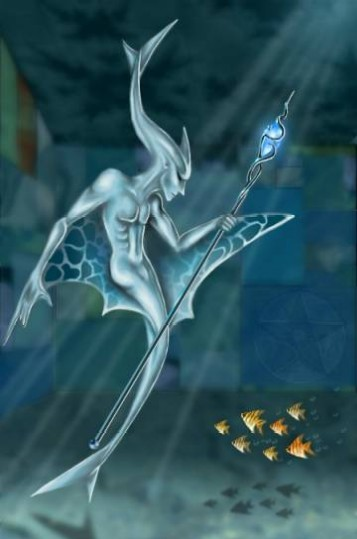

Forums galactiques > Assemblée Galactique : diplomatie officielle > Protection
Pages : 1 2
Fedayn 15/06 ETU 09:54 | Commandants, commandantes, Ma lecture des messages de cette assemble me porte a une conclusion simple. Beaucoup parmi vous sont ceux qui en ont assez de la tyrannie de la puissance, des abus de pouvoir, de ne pas pouvoir réagir. L’impuissance est le plus destructeurs des sentiments de rage. Ainsi ai-je pensé de créer un système d’assurance et de protection. Moyennant un fixe à la semaine, vous entrez sous ma protection. C’est a dire que si un commandant vous harcèle j’interviendrai en votre faveur pour qu’il arrête ses exaction, et ce avec tous les moyens qui sont à ma disposition. Attention cela ne vous autorise en rien a commettre des actes iniques sous mon aile. Néanmoins, moyennant un fixe par semaine, payable en plusieurs fois si vous n’avez pas assez de capitaux, je vous assure ma protection. Enfin vous pourrez vivre en paix et vous développer sans aucune crainte d’un voisin plus puissant et menaçant que vous. Que tous ceux qui veulent s’assurer un avenir sans guerre et une riposte contre toute attaque s’inscrivent ici même. Le tarif variera en fonction de vos ressources ainsi je répondrai individuellement a chacun de vous. Commandant Fedayn. |
ZapS15/06 ETU 09:56 | question : coment tu fais si un contentieux oppose deux joueurs qui sont sous ta protection ? |
Alcibiade 15/06 ETU 10:02 | Je salue cette initiative qui va permettre aux jeunes commandants de se développer à l'abri des commandants expansionnistes. |
Obiwan Kénobi 15/06 ETU 10:03 | Excellente initiative! Je propose moi même une protection low cost pour les commandants de seconde zone! |
Obiwan Kénobi15/06 ETU 10:05 | Evidemment, le niveau de mes prestations est assez lamentable. Une dizaine de chasseurs au mieux contre les meilleurs commandants. |
Fedayn15/06 ETU 10:10 | Reponse à ZapS, j'opere une enquete detaillée de la situation, ecoute les requetes des deux parties, des tierses personnes engagées, des voisins, des espions et une fois tout bien consideré je propose un arbitrage equitable, egalitaire et le plus juste possible. la protection n'est pas une carte blanche, meme si je conviens qu'un commandant qui aime faire la guerre puisse le faire et je n'aie rien à y redire. C'est la premiere phase de la conciliation. |
Snake 15/06 ETU 10:59 | Plutot qu'une protection pour les commandants novices, ne faudrait il pas mieux pacifier la galaxie avec des institutions capable de faire régner la paix ??? Snake le marchand |
Fedayn15/06 ETU 11:00 | Tout a fait d'accord mais l'un n'empeche pas l'autre. Nous vivons une periode trouble et j'essaie de palier au plus urgent. |
primarque 15/06 ETU 13:19 | je salue l'initiative de Fedayn qui est il me semble parfaite sauf sur un point mais pasl e moindre : les joueurs plus puissants que vous. Imaginez que je sois sous votre aile, le commandeur Fregger par exemple entreprend de m'annihiler ( ca me rapelle quelque chose....), que faites vous? vous n'avez pas la force de me protegez et encore moins de riposter..... |
fregger15/06 ETU 13:55 | Oui, c'était la question que je me posais moi aussi (mais je n'osais pas la dire à haute voix. Heureusement que Primarque ose dire tout haut ce que tout le monde pense tout bas). Conceptuellement, une offre de protection moyennant rétribution sans droit ni institutions, c'est... du racket mafieux. |
primarque15/06 ETU 15:56 | Non, car il n'y à pas "obligation", cela reste donc pls du body-guard.... (Je sais Fregger, ca s'appele "avoir une grande gueule",des fois ca embete et souvent ca accelere positivement!) |
fregger15/06 ETU 16:02 | C'est vrai, primarque, je m'étais trompé, et je reconnais bien là votre galactique subtilité. Néanmoins, la position de prééminence du commandant Fedayn sur ses "protégés" est à même de poser les bases d'une coalition reposant sur une système mafieux, où la "protection" rétribuée se verra vite agrémentée de demandes impérieuses de menus services (espionne-moi Untel, donne-moi plus de ressources, rentre en guerre contre tel ennemi pour moi). |
primarque15/06 ETU 16:15 | Dis donc Fregger, tu sais quje t'en veux carrement quand meme de m'avoir écrasé comme une merde alors que je ne t'avais jamais rien fait!!!!!!!!!! laors jme doute bien que tu t'en fout mais t'aurais pu avoir un bon geste quand meme... |
Nanovitch 15/06 ETU 16:18 | C'est sans doute le nouveau système que fedayn a inventé pour s'opposer aux commandants les plus faibles.... ah bon, vous etes marchand? je connais plus vos invasions sauvages que votre grille tarifaire. |
fregger15/06 ETU 16:58 | Je propose, cher Primarque, de régler la question de la spoliation de vos planètes en privé. |
OverLorD 15/06 ETU 17:39 | mdr obiwan ;) pas mal , tu comence à faire de l'humour ca change et cela est deja plus plaisant. |
primarque15/06 ETU 17:39 | les négociations sont en bonne voie, je suis trés éttoné par Fregger et commence à sérieusement changé d'avis sur lui! Le "tyran" ne serait il pas aussi "tyran" que ca? |
| Tourist  15/06 ETU 17:54 | Je peux y participer commandant Fedayn? J aurai une ou deux requetes! |
Fedayn15/06 ETU 18:07 | Bien sur commandant. |
Fedayn15/06 ETU 18:08 | mais j'ai dit qu'on y entre pas pour regler ses comptes mais pour se developper en paix... |
Pages : 1 2
Forums galactiques > Assemblée Galactique : diplomatie officielle > Protection